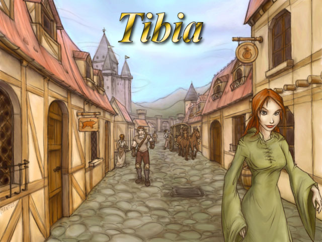
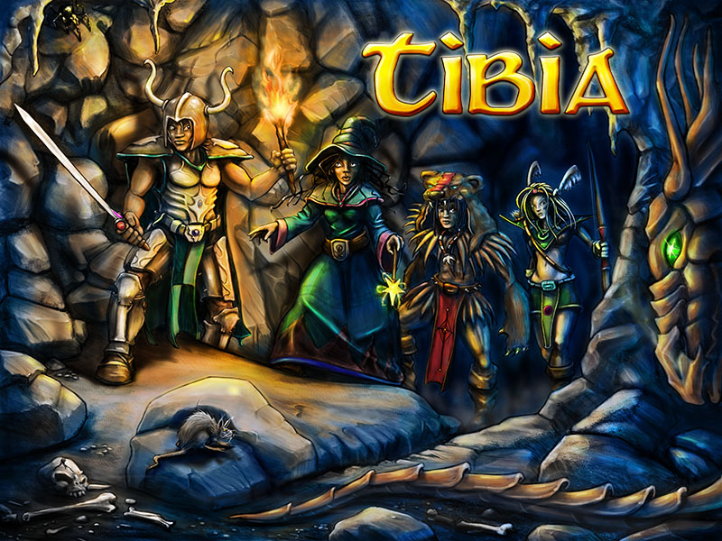

Breve resumo
Tibia é um jogo eletrônico de RPG multijogador (MMORPG) gratuito, desenvolvido pela CipSoft. Criado em 1997, é um dos jogos mais antigos do gênero. Nele, os jogadores podem desenvolver as habilidades de seus personagens, buscar tesouros, resolver enigmas e explorar áreas como cidades, masmorras, florestas, desertos, ilhas, praias, minas, etc.[6] Os personagens podem disputar lutas entre si ou com criaturas,[7] tais como monstros, dragões, demônios, orcs, utilizando armas e magias, enquanto os NPCs não podem ser atacados.[8]
Começo contado
Ao iniciar o jogo, o seu avatar começa na ilha de Dawnport,[9][10] uma ilha onde todo jogador deve permanecer até desenvolver habilidades necessárias para o progresso e sobrevivência nos outros mapas do jogo. Quando o jogador atinge o nível 8, ele pode, opcionalmente, escolher a sua vocação e deixar a ilha. Em Dawnport, o jogador familiariza-se com o jogo e aprende muitas coisas sobre o mundo de Tibia, como magia ou usar flechas e espadas.[11]
O jogo foi desenvolvido utilizando a linguagem de programação C++[12] em ambas versões de Windows e GNU/Linux